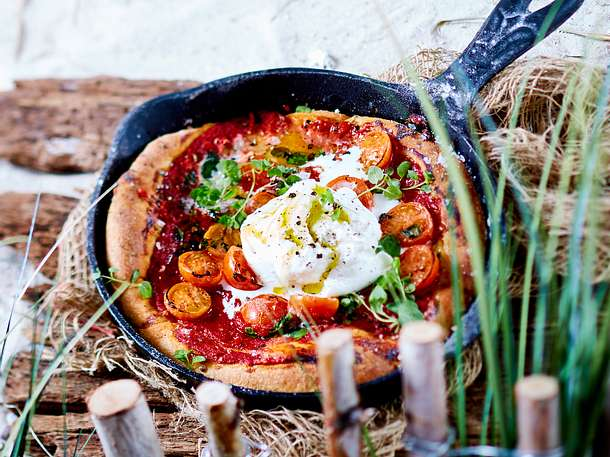

Pizza Buffalina

Description
Follow along as we make a traditional pizza buffalina. Whether you choose to make your dough from scratch or not, we will use fresh ingredients such as fresh cherry tomatoes and mozzarella di buffola.
Ingredients
- Pizza dough (fresh or store-bought)
- Pizza Tomato Sauce (fresh or store-bought
- Mozzarella di buffola
- Cherry Tomatoes
- Olive Oil
- Parmiggiano
- Fresh Basil (optional)
Recipe
- Pre-heat your oven at 220C degrees
- Lay the dough in an oven proof tray
- Using a fork, make small holes in the dough
- Generously glaze the dough with olive oil
- Sprinkle some grated parmiggiano on top of the dough
- Spread a spoon full of tomato sauce on the dough
- Cut or pull apart the mozzarella and place it evenly across the dough
- Slice some cherry tomatoes and spread evenly across the dough
- Place the pizza in the tray in the oven, cook for 18 to 20 minutes, or until golden
- Once the pizza is cooked, add the final touches of fresh basil and olive oil
- Bon Appetit!